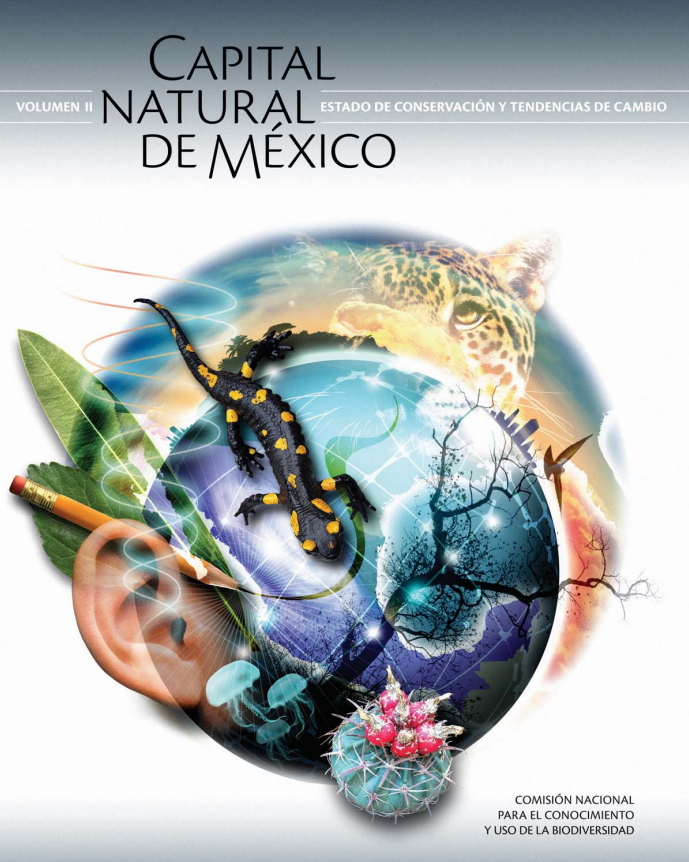

Flora y Fauna Mexicana de los Centearios
México es un país con una vasta tradición cultural, riqueza histórica y privilegiada
geografía. Su ubicación territorial le permite abarcar prácticamente todos los tipos
de ecosistemas conocidos a nivel mundial, desde zonas desérticas hasta selvas exuberantes, además de bosques, pastizales, cañadas, costas y sierras. No extraña entonces
que se le considere entre los diez países más ricos del mundo en especies animales y
vegetales.

Flora y Fauna
La Procuraduría Federal de Protección al Ambiente te
comparte el tercer número de la revista Mi PROFEPA
de 2022. En esta ocasión encontrarás diversos temas
de flora y fauna que sin duda serán de tu interés y te
permitirán identificar las diferencias que hay entre las
especies silvestres, exóticas y domésticas.

Áreas de Protección de Flora y Fauna en México
Nuestro país posee 40 áreas bajo esta categoría con seis millones 996 mil 864 hectáreas. Es la tercera en superficie después de Parques Nacionales y Reservas de la Biósfera.
